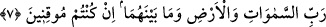

konulacak yere Rab kelimesi konulmuştur. Ayrıca Rab kelimesinin, Peygamberimiz’e
(s.a.) âid olan hitâb zamirine muzâf olması Peygamberimiz’in (s.a.) şerefini yüceltmek
içindir.
Vardır iki âlemde de lutfu, ihsânı O’nun...
Sükûn ve ferahlıktır halka rahmeti…
Kendi yüceliğini methederken Efendimiz (s.a.) şöyle buyurmuştur: “Ben ancak bir
rahmet ve hidâyetten ibâretim.”
et-Te’vilâtü’n-Necmiyye’de şöyle denilmektedir: Biz Hz. Muhammed’i (s.a.) hak
âşıklarını ayrılık karanlıklarından vuslat nûruna çıkarması için Rabbinden bir rahmet ve
hidâyet olarak gönderdik. Yine biz dostlarımızın nefislerini muvaffak kılmak ve
gönüllerini hakîkate erdirmek için onlara rahmet olarak elçiler göndeririz.
“Doğrusu O, işitendir, bilendir” işitilmek şânından olan her şeyi işitir. Özellikle hak
âşıklarının iniltilerini işitir. Bilinmek şânından olan her şeyi de bilir. Özellikle
sevenlerinin sızlanmalarını bilir. Allah’a kulların söz, iş ve hallerinden hiçbir şey gizli
kalmaz. Bu ifâde Allah Teâlâ’nın rubûbiyetinin tahkîk edilmesidir. O’nun rubûbiyetinin
îzâhına, O’nun bu yüce sıfatlarından başka hiçbir şey hak sâhibi değildir.
7. Eğer kesin olarak inanıyorsanız (bilin ki Allah), göklerin, yerin ve ikisi
arasında bulunanların Rabbidir.
Fakir (Bursevî) der ki: Bu âyetin mânâsı hakkında, bana uykuyla uyanıklık arasında,
ibâre ile değil de, işâret yoluyla ilhâm edilmişti ki, benim mürebbîm, beni mânevî yolda
kemâle ulaştıran “göklerin, yerin ve ikisi arasında bulunanların Rabbidir”. Yani ulvî
ve süflî bütün mevcûdâtın Rabbidir; çünkü bütün bu varlıklar ilâhî isim ve sıfatların
zuhûr ettiği yerlerdir. Dolayısıyla şu âlemin bütün zerrelerinde hakîkat müşâhede edilir.
Bu müşâhede ârifin rûhunun gıdâsıdır. Nasıl beden, hissî ve maddî gıdâlarla beslenip
maddî gelişmesinin zirvesine ulaşmaktaysa, ârif de bu müşâhede gıdâsıyla istîdâd ve
kabiliyetinin zirvesine ulaşmaktadır.
Mesnevî sahibi Mevlânâ da buna işâreten şöyle demektedir:
Bu hayaller ki tuzaktır velîler için
Pırıltılarıdır Allah’ın has bahçesindeki o ay yüzlülerin
Bunu iyi anla ve de ki: Ben Allah’tan başkasına ibâdet etmem ve O’ndan başkasını da
murâd etmem.
“Eğer kesin olarak inanıyorsanız” Bu ifâde, mânânın tam olarak zuhûr etmesinden